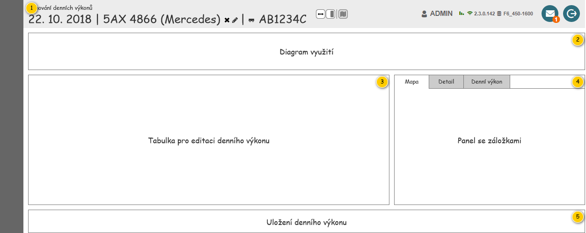
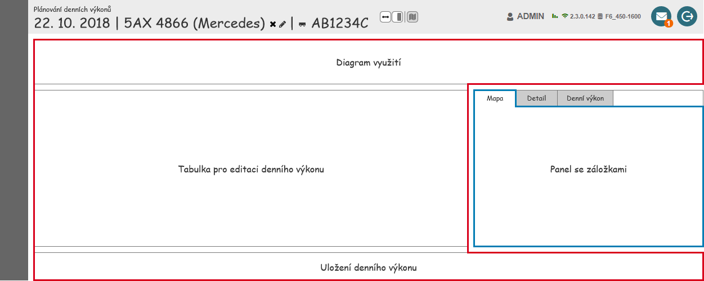
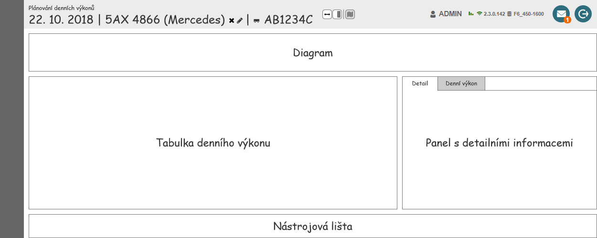

Stručný popis
Uživatelské rozhraní slouží k editaci konkrétního Denního výkonu.
Poznámka: Pokud není konkrétní Denní výkonu k dispozici, je zobrazeno chybové hlášení. Systém následně přesměruje uživatele na obrazovku plánování Denních výkonů (viz ).
Uživatelské rozhraní
Uživatelské rozhraní je tvořeno z ucelených skupin, které budou postupně popsány.
Rozložení
Drátový diagram

Přehled UI komponent
| Callout | Skupina |
|---|---|
| 1 | Hlavička |
| 2 | Diagram využití |
| 3 | Tabulka pro editaci denního výkonu |
| 4 | Panel se záložkami |
| 5 | Uložení denního výkonu |
Rozměry panelů
Pro panely, jejichž rozměry lze uživatelsky nastavit, jsou níže uvedeny minimální rozměry.
| Callout | Panel | Minimální šířka | Minimální výška |
|---|---|---|---|
| 3 | Tabulka pro editaci denního výkonu | TODO px | TODO px |
| 4 | Panel se záložkami | TODO px | TODO px |
Poznámka: V případě, že obsah panelu překračuje jeho rozměry, je zobrazen posuvník v příslušném směru.
Chování
Zobrazení mapy v samostatném okně
V rámci obrazovky je umožněno zobrazení mapy v samostatném okně. Konkrétně se jedná o mapa s Denním výkonem, viz Panel se záložkami.
Po spuštění režimu dojde ke změně rozložení a navázání komunikace mezi primární a sekundární částí obrazovky, viz .
Ukončení režimu pak provede určité akce potřebné k vrácení obrazovky do původního stavu, viz .
Samotné rozložení se změní následovně – primární část obrazovky zůstává zobrazena v původním okně, oddělená sekundární část obrazovky je pak vložena do nově vytvořené záložky prohlížeče. Vše je pak naznačeno v dále uvedené tabulce.
| Část obrazovky | Náhled | Poznámka |
|---|---|---|
| – |  | Jedná se o rozložení obrazovky v případě, kdy není zobrazena mapa v samostatném okně. V rámci náhledu jsou pak naznačeny jednotlivé části obrazovky:
|
| Primární |  | V rámci Panelu se záložkami nyní není zobrazena mapa s Denním výkonem. |
| Sekundární |  | V hlavičce není umožněno skrývat žádné z panelů obrazovky. V rámci obrazovky je nyní zobrazena pouze mapa s Denním výkonem, není tedy nutné zobrazovat záložky. |
Nastavení
Persistence nastavení obrazovky
| Skupina | Ovládací prvek | Výchozí hodnota | Poznámka |
|---|---|---|---|
| Skupiny – šířky panelů | – | – | Pokud si uživatel změní poměr velikosti mezi jednotlivými panely obrazovky, je nutné toto rozložení zachovat. Poměr je pak možné měnit pouze mezi Mapou zobrazující denní výkon a Panelem se záložkami. Poznámka: Je potřeba počítat s tím, že uložené poměry velikosti mezi jednotlivými panely mohou být v rozporu s minimálními rozměry panelu například ve chvíli, kdy uživatel použije monitor s menším rozlišením – uložené nastavení v takovém okamžiku nemusí korespondovat s aktuálním zobrazením v prohlížeči. |
| Skupiny – zobrazené panely | – | Zobrazeno | Pokud uživatel skryje některý z panelů, je nutné toto nastavení zachovat. |
| Panel se záložkami – zvolená záložka | – | Mapa | Pokud uživatel zobrazí jeden z dostupných panelů, je nutné tento výběr zachovat. |
| Diagram využití | Časová osa | 0:00-23:59 | – |
| Panel se záložkami | Mapa (200UI02: Mapa zobrazující denní výkon) | – | Nastavení provedená v rámci mapy zůstávají zachována, vychází z obecného nastavení. Ukládání probíhá i v režimu zobrazení mapy v samostatném okně. |
| Panel se záložkami | Detail | – | Nastavení provedená v rámci mapy zůstávají zachována, vychází z obecného nastavení. Ukládání probíhá i v režimu zobrazení mapy v samostatném okně. |
Poznámka: Bude doplněno v rámci revize rozložení formuláře.
Parametry URL
| Parametr | Skupina | Hodnota | Poznámka |
|---|---|---|---|
| Denní výkon | – | Entita Denní výkon. | Jedná se o povinný parametr. |
Poznámka: Jednotlivé parametru v URL nemusí být čitelné pro lidi.
Grafický návrh
Použité barvy a ikony
| Použití | Barva | Ikona | Výskyt | |
|---|---|---|---|---|
| Typ položky | Objednaná služba | #826832 | – |
|
| Lokace objednané služby | Viz řádek Typ lokace dle sloupce Použití. | – | ||
| Časový interval | #999999 | – | ||
| Rozdělení | #800080 | – | ||
| Akce v lokaci | Vyzvednout | #6B5B95 | ra-arrow-corner-up |
|
| Umístit | #779919 | ra-arrow-corner-down | ||
| Vyprázdnit | #D5AE41 | ra-empty-out | ||
| Navštívit | #4F84C4 | ra-location | ||
| Typ lokace | Místo realizace | #223A5E | – |
|
| Likvidační místo | #D5AE41 | ra-recycle | ||
| Výchozí likvidační místo | #D5AE41 | ra-recycle | ||
| Provozovna | #006E6D | ra-list | ||
| Jiné | #4F84C4 | ra-position | ||
| Časový interval | #999999 | ra-utensils | ||
| Místo dočasného uložení | #4F84C4 | ra-group | ||
| Spojnice lokací v diagramu | Mezi položkami | #919DAF | – |
|
| V rámci položky | #C1B499 | – | ||
| Spojnice lokací v mapě | Mezi položkami | #223A5E | – |
|
| V rámci položky | #826832 | – | ||
Interval omezení | Mimo provozní dobu | #CCCCCC | – |
|
| Alokace na servis | #B3B3B3 | ra-wrench | ||
| Časové okno | Splněno časové okno | #006E6D | ra-clock |
|
| Nesplněno časové okno | #672E3B | ra-clock | ||
| Diagram časové okna | Časové okno | #F3D6E4 | – |
|
| Čas realizace | #672E3B | – | ||
| Nesplněno časové okno | #672E3B | ra-warning | ||
| Ostatní | Položka Valník-Rozvoz | #C1B499 | – |
|
| Lokace Rozdělení | #800080 | – |
| |
| Lokace Start | #4F84C4 | ra-flag-full |
| |
| Lokace Cíl | #4F84C4 | ra-flag-finish |
| |
Grafický návrh
Revize
23. 2. 2024: Tomáš Nadrchal
| Odkaz | Stručný popis změny/doplnění |
|---|---|
| Použité barvy a ikony | Doplněno chování pro nový typ lokace objednané služby (naznačeno modře). |
8. 11. 2019: Tomáš Nadrchal
| Odkaz | Stručný popis změny/doplnění |
|---|---|
| Persistence nastavení obrazovky | Doplněny poznámky k chování při spuštěním režimu zobrazení mapy v samostatném okně (naznačeno modře). |
4. 10. 2019: Tomáš Nadrchal
Provedeny změny v rámci celého dokumentu dle požadavků v M10 (naznačeno modře).
30. 6. 2019: Tomáš Nadrchal
Jedná se o změny, které proběhnou v rámci M9.
| Odkaz | Stručný popis změny/doplnění |
|---|---|
| Použité barvy a ikony | Aktualizovány použité ikony (naznačeno modře). |
24. 6. 2019: Tomáš Nadrchal
| Odkaz | Stručný popis změny/doplnění |
|---|---|
| Persistence nastavení obrazovky | Doplněn popis základního nastavení obrazovky, které má být ukládáno (naznačeno modře). |
8. 4. 2019: Tomáš Nadrchal
| Odkaz | Stručný popis změny/doplnění |
|---|---|
| Použité barvy a ikony | Doplněna barva a ikona pro Typ lokace-Místo dočasného uložení. |